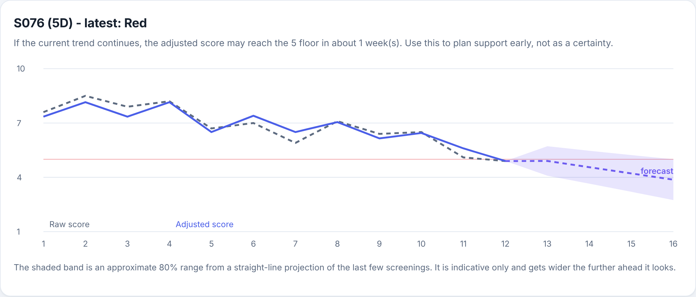

Psychometric-Pulse
Prototype · simulated data
Once a Year Isn't Enough.
Setahun Sekali Tak Cukup.
Psychometric test
What happens between the checks?
?
5 questions · 2 minutes
In simulation · found before the crisis point
Weekly check-ins
Once-a-term check-ins
Synthetic data. 30 simulated schools, 120 students each.
Teacher transfer
Exam week
Class average
Low score
3-week decline
Sharp drop vs own baseline
Attendance
Late work
🔒 psycho-pulse.vercel.app

Outlook: floor in ~1 week
Forecast · indicative, not a diagnosis
Type in a few scores
One student per line, scores for week 1, 2, 3…
Analyse these scores
How much can you trust this?
Usable
3 screenings: absolute minimum
5 screenings: recommended minimum
8+ screenings: reliable
Best with 10+ students per class (6 is the minimum).
Rebuilt, not stored.
No cookies
No storage
No data sent
Psychometric-Pulse
Notice early. Support early.
Perhati awal. Sokong awal.
psycho-pulse.vercel.app
Prototype built on simulated data · supports counsellors, never labels students